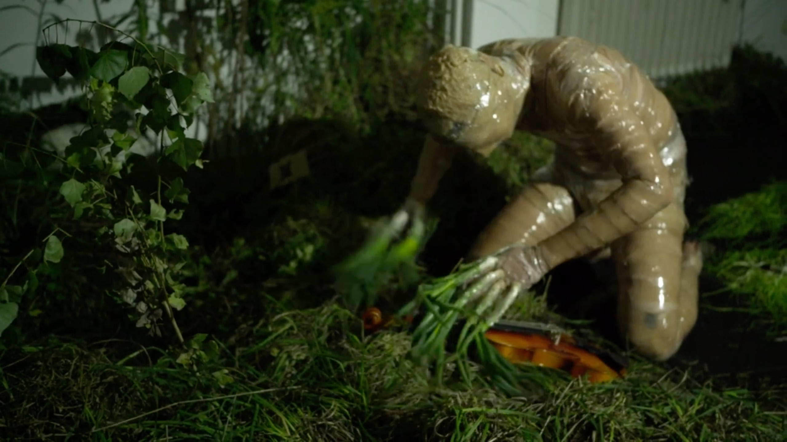
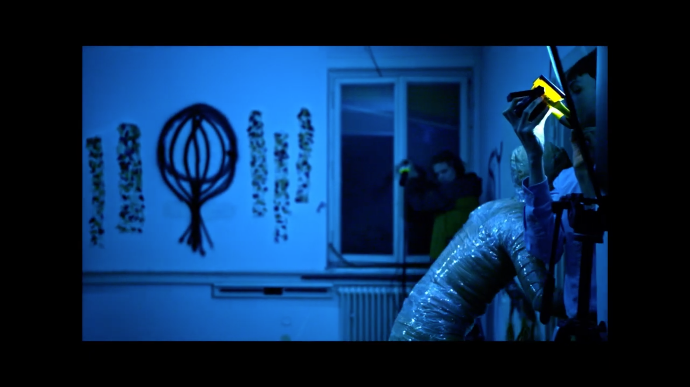
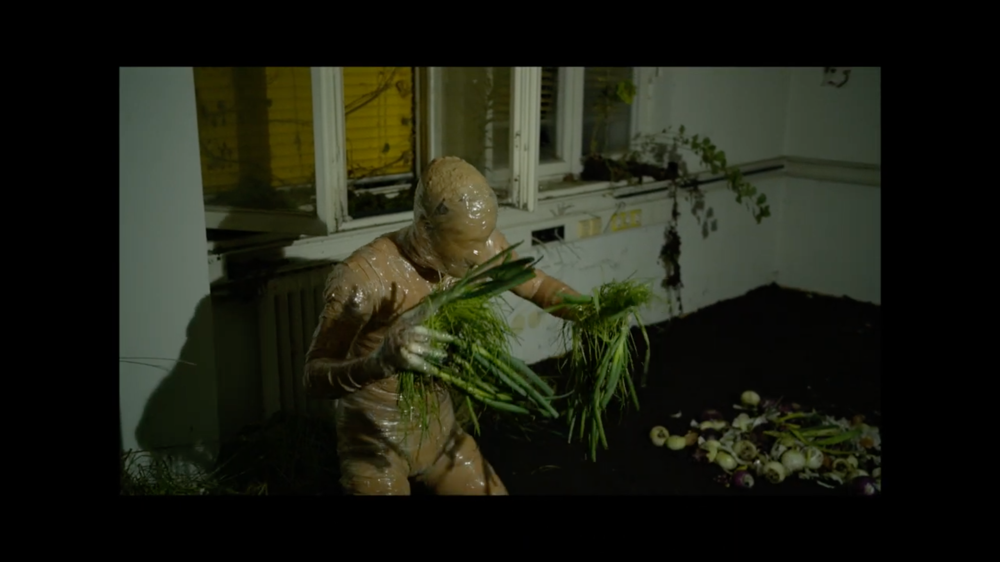

Der Zwiebelkönig
is an absurd short film that uses a fictional creature to arrive at a strange musical otherness.



in
This work explores the boundaries between the inside and outside of the fiction of an artwork, frequently breaking the narrative of the film to remind the viewer of the constructed nature of narratives.
Der Zwiebelkönig
a film crew finds a creature from another dimension in an abandoned house. The creature is blind and has an onion's skin causing it to interact with a familiar musical object in an unfamiliar way.
This work explores the boundaries between the inside and outside of the fiction of an artwork, frequently breaking the narrative of the film to remind the viewer of the constructed nature of narratives.
The film also contains a reflection of the situation of music: a weird creature of otherness expresses an urge to "show" and "cry," and does so by playing the violin, thereby arriving at a sort of tender, intimate music, framed by the contrived narrative.